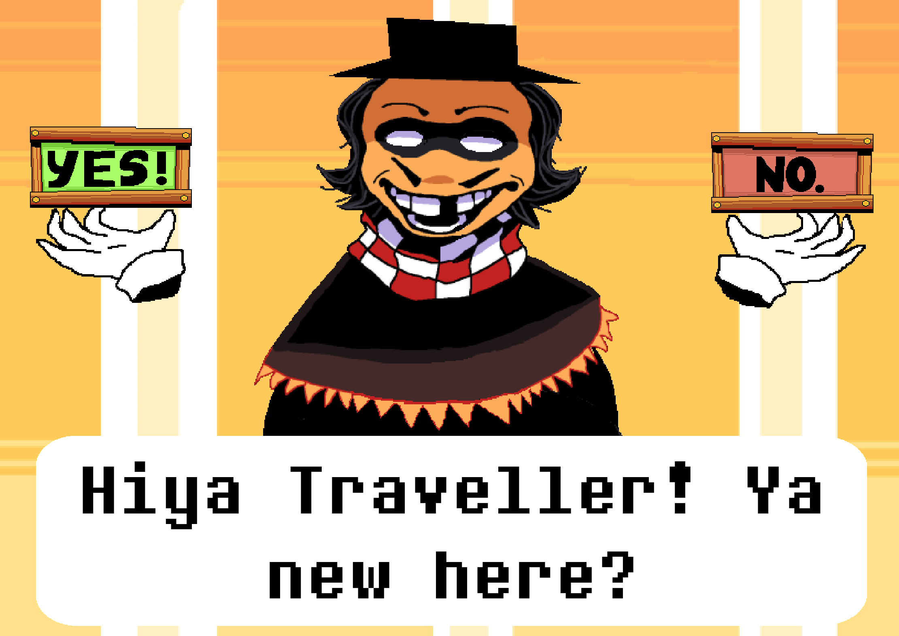

üñ±Ô∏è
An oil painting of Charcoal bay beach . It was one of ori’s favourite places to go to until it was ravaged by a storm.LINK Fretty cool paint
{kind=link}

üñ±Ô∏è
This is a parody peice on The Great Wave. Instead of Japanese fishermen, ori added the titanic LINK
üñ±Ô∏è
This is one of the only still life scenes you’ll see ori draw. It depicts a kettle among apples. Reflections and shadows are the focal point of this artworkLINK Fretty cool paint

üñ±Ô∏è
Rows of cubes with harsh blue shadows fill the scene. They hide a hidden message. LINK Fretty cool paint

üñ±Ô∏è
Two cat sculptures sit on a sunny windowsill. The blue one is a gift to oris grandmother and the white one is a gift to ori from his childhood friend. LINK Fretty cool paint

üñ±Ô∏è
This painting belongs to a pair of painting depicting an abstract landscape, one in the morning and one at night. The second painting was lost however. LINK Fretty cool paint

üñ±Ô∏è
A snail house slowly makes its way through a fantasy landscape. Green glowing mushrooms litter the ground. And yet, this place feels familiar LINK Fretty cool paint

üñ±Ô∏è
An alternate look on the snail house painting. This time it is in the normal world and it is a simple snail. Ori was utilising the dot technique. Every stroke was a dot. LINK Fretty cool paint
üñ±Ô∏è
Using patterns and strokes ori was trying to depict the royalty of a male deer. LINK Fretty cool paint

üñ±Ô∏è
A creative adaptation of the aftermath of the Shakespearean play “Macbeth”. It depicts Macbeth in hell, ruling over skeleton worshippers like a king. 3 witches can be found with glowing eyes. LINK Fretty cool paint

üñ±Ô∏è
This is one or oris recent paintings, he was playing around with colours and textured paste to create this Wild West painting LINK

üñ±Ô∏è
A second try for using gold leaf. This time ori depicts fantastical cacti. Gemstones and glitter makes this painting stand out. LINK Fretty cool paint

üñ±Ô∏è
Using golf leaf, ori was able to depict a whimsical mushroom scene. LINK Fretty cool paint
